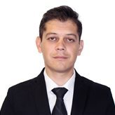
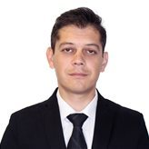

|  |
Silviu Daniel Alexandru
alex.silviu@gmail.com
|  |
To take a position as a linux system administrator.
Licenciatura en Ciencias económicas, Especialidad Transacciones
Internacionales. Universidad "Dunarea de Jos" Galati, Romania. 2001
Linux Foundation Certified System Administrator. Diciembre 2015.
Curso : LFS201 Essentials of System Administration. linuxfoundation.org sep-nov 2015
Administrador de sistema Certificado de Linux Foundation
Sistema operativo: Linux (CentOS 6.x, 7.x; Red Hat 6.x, 7.x; Fedora)
Rede: LAN/WAN, TCP/IP, VPN
Programas: Virtualización (Virtual Machine Manager, Virtual Box), Telnet, SSH, FTP
Markup lenguajes: html, css
Scripting: bash
2010 - 2015 He implementado los programas de código abierto mediante la instalación y el mantenimiento de Debian GNU / Linux y LibreOffice en tres estaciones de trabajo, recortando los gastos de licencias de software
2005 -2015 propietario y director general de una correduría de seguros, Neobroker Broker de Asigurare, con la tarea principal de la gestión de los clientes, así como la planificación de un flujo de trabajo eficiente para el equipo de ventas
Inglés: Nivel avanzado oral y escrito.
Castellano: Nivel elemental oral y escrito
Francés: Nivel intermediario oral y escrito
Italiano: Nivel elemental oral y escrito.
Rumano: Idioma materno